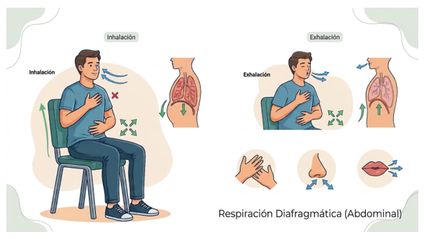
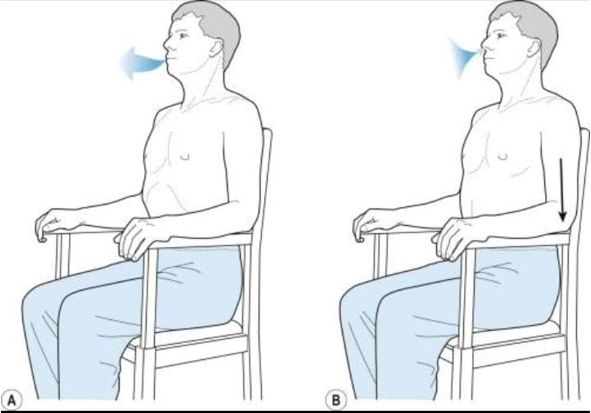
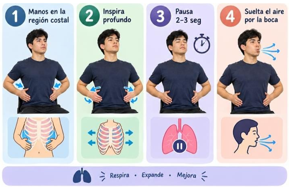

Objetivo fisiológico
Maximizar la excursión diafragmática, reducir la ventilación del espacio muerto y optimizar las bases pulmonares.
Formación técnica y tecnológica
Optimización de la Ventilación Pulmonar y Prevención de Complicaciones
La fisioterapia respiratoria comprende técnicas que buscan mejorar el patrón ventilatorio, favorecer la movilidad torácica y optimizar la respiración.
Esta guía tiene fines educativos. La selección, indicación y realización de los ejercicios debe adaptarse a las condiciones de cada persona y seguir las recomendaciones de un profesional de salud.
Maximizar la excursión diafragmática, reducir la ventilación del espacio muerto y optimizar las bases pulmonares.
Patrones respiratorios superficiales, disnea, retención de aire y periodos posoperatorios.
Siéntese de forma erguida con la espalda apoyada o adopte la posición de decúbito supino. Coloque una mano sobre el pecho y otra sobre el abdomen.
Inhale suave y profundamente por la nariz durante 2-3 segundos, permitiendo que el abdomen se expanda hacia afuera sin mover el pecho.
Expulse el aire lentamente por la boca en 3-4 segundos mientras el abdomen desciende libremente.

Técnica 1 · Respiración diafragmática
Generar presión positiva en la vía aérea (PEEP intrínseca), previniendo el colapso bronquial espiratorio y mejorando el vaciado alveolar.
Manejo inmediato de la disnea, atrapamiento aéreo, colapso de vías aéreas pequeñas y sensación de falta de aire.
Inhale lentamente por la nariz en 2 tiempos (2 segundos), con la boca cerrada y los hombros completamente relajados.
Frunza los labios manteniendo una pequeña abertura central, como si fuera a soplar una vela o silbar.
Expulse el aire de forma suave, continua y sin forzar durante 4 tiempos (4 segundos, el doble de la inhalación).

Técnica 2 · Respiración con labios fruncidos
Aumentar el volumen corriente, activar la ventilación colateral (poros de Kohn) y prevenir la atelectasia.
Restricción de la expansión de la pared torácica, hipoventilación regional y periodos posquirúrgicos.
Sitúe las manos sobre la región lateral de las costillas inferiores.
Inhale profundamente expandiendo lateralmente las costillas contra la ligera resistencia de sus manos.
Sostenga el aire al final de la inhalación durante 2 a 3 segundos (apnea inspiratoria).
Suelte el aire de forma pasiva y uniforme por la boca.

Técnica 3 · Ejercicios de expansión torácica
Mantenga una posición cómoda y evite tensiones innecesarias en hombros y cuello.
Realice los movimientos respiratorios suavemente, sin forzar la entrada o salida del aire.
Suspenda el ejercicio si presenta mareo, dolor torácico o aumento de la dificultad respiratoria.
Adapte las técnicas a las indicaciones del profesional de salud.
La educación respiratoria y la aplicación adecuada de las técnicas contribuyen al cuidado de la función pulmonar y al bienestar de las personas.